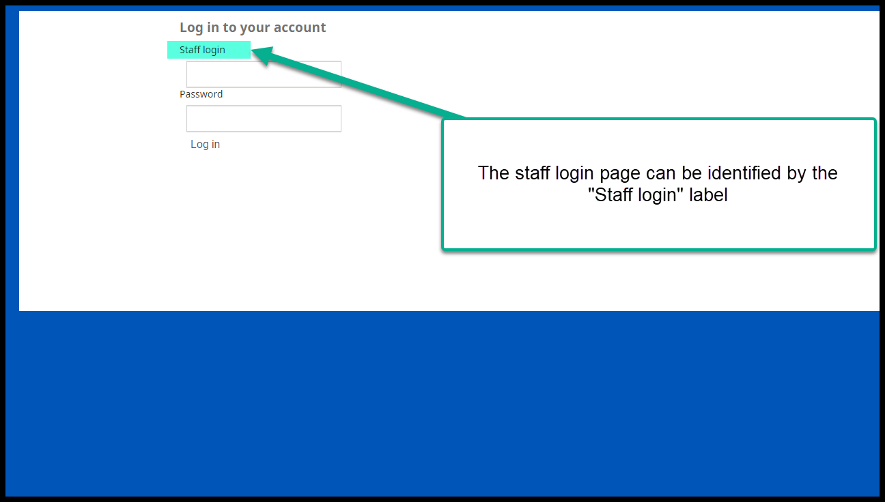
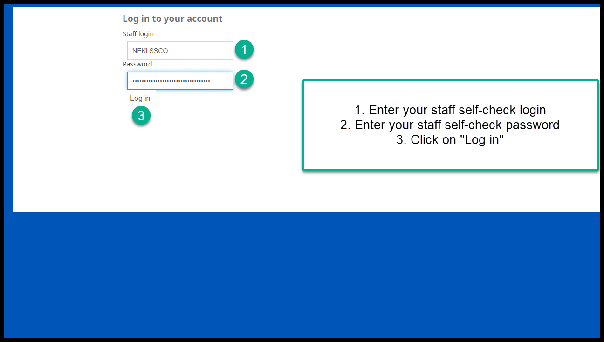
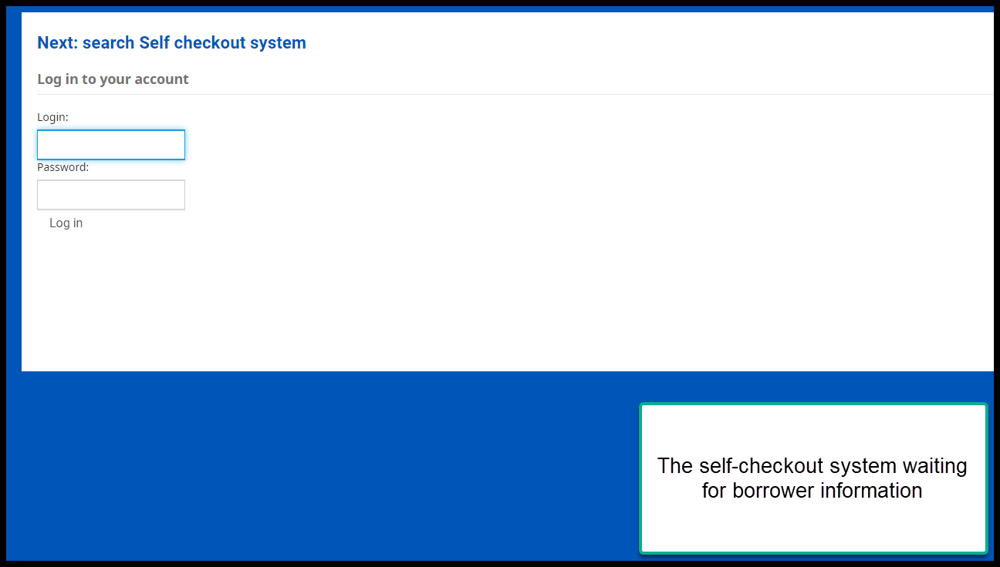
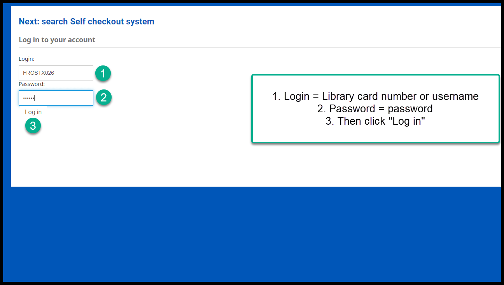
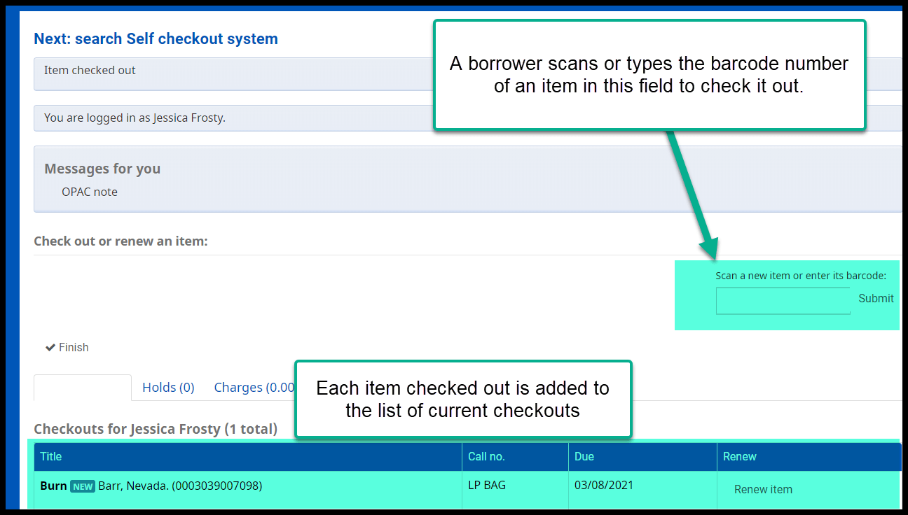
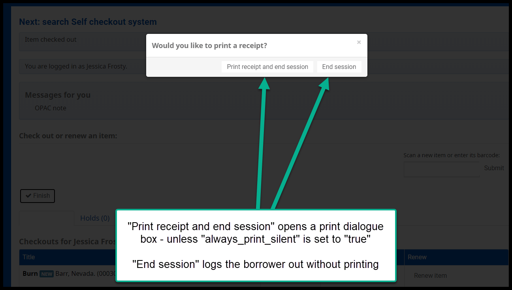
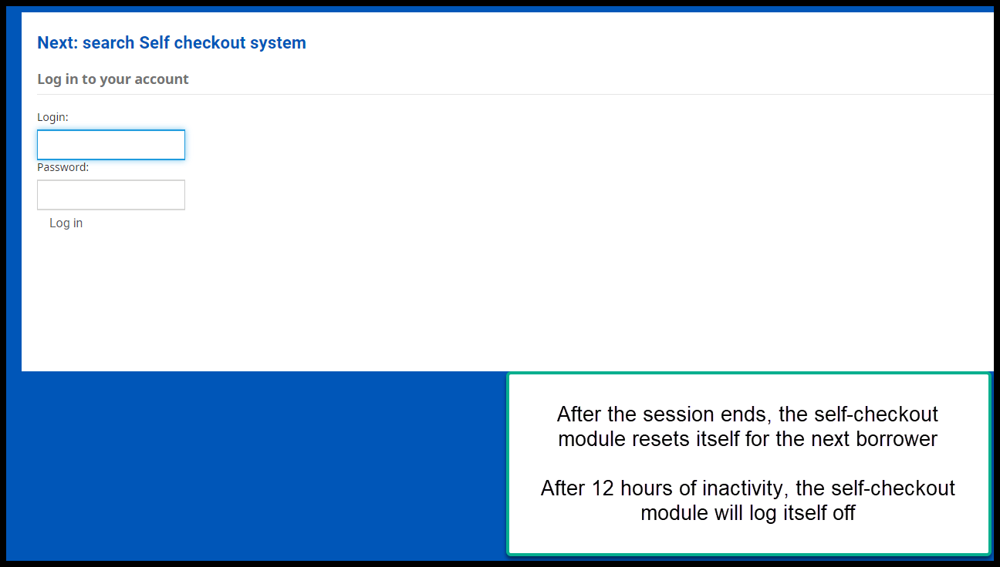

Welcome to Next Search Catalog!¶
Contents:
- History of Next Search Catalog
- Emergency procedures
- Koha 20.05 training
Indices and tables¶
Self checkout¶
Koha has a built-in self-checkout module.
To log into this module you need a “SYSTEM login only (exempt)” account set up with self-checkout permissions. If you do not have an account with this type of access and you would like to use the bulit-in self-checkout moudle, please contact nexthelp@nekls.org.
The self-checkout module will work best on computers using Firefox with “print.always_print_silent” set to “true,” with “Autofill logins and passwords” disabled, with “remember search and form history” disabled, and with “Clear history when Firefox closes” set to clear all history every time the browser is closed.
This module is accessed via the self-checkout portal at https://nextkansas.org/cgi-bin/koha/sco/sco-main.pl
- To use the self-checkout module, go to https://nextkansas.org/cgi-bin/koha/sco/sco-main.pl

- Log in to the self-check module with your staff self-check username and password

- This computer is now ready for for borrowers to log in and check materials

- When a borrower wants to use the self-checkout system, they will need to enter their username or library card number in the field that says “Login:” their password in the field that says “Password:” and then click “Log in”

- When a borrower logs in they will see a list of items they currently have checked out with due dates. They can also click on tabs to see the status of any requests or fees on their account. If there are any OPAC messages or OPAC notes on their account, the borrower will see those under their name on the screen.

- Once a borrower is logged in, the cursor should automatically be in the “Scan a new item or enter its barcode” field. All a borrower should have to do is scan barcode numbers until they are finished checking out items.

- When finished a borrower needs to click on “Finish.” If someone forgets to click on “Finish,” they will be automatically logged out after 120 seconds of inactivity.

- When they click on “Finish,” the borrower will be given an option to print a receipt or just quit. If “always_print_silent” is not enabled, the borrower will see a print dialogue box when they click on “Print receipt and end session.”

- Once the session has ended, the self-checkout module will prepare to checkout to a new borrower. If the self-checkout system is inactive for more than 12 hours, the self-checkout system will log itself out and you will need to re-enter the staff login to begin again.

Helpful hints¶
If you have a dedicated self-checkout machine, you will want to set the browser’s home page to the self-checkout page.
If you have a dedicated self-checkout machine, you may want to configure Firefox to work in Kiosk mode. This will prevent borrowers from logging your computer out of the self-check system or using the computer for other activities.
The staff login and the borrower login look incredibly similar. If a borrower has trouble logging in to use self-checkout, it may be because the self-checkout machine was never properly logged in (or has timed out, or the connection has been reset, etc.) and the borrower may be using the staff login. If this happens, look for the words “Staff login” above the login field. If you see this, you need to use the staff account to restart self-checkout.
If your browser is set to remember logins or to remember form data, it is possible that materials will be checked out to the wrong borrowers and that materials that have been checked out in the past will be checked out to the wrong borrowers in the futre. Firefox, Chrome, and Edge all like to be helpful by trying to remember what data has been entered into websites in the past and they think they’re being helpful when they remember logins and passwords. But if 20 people are using the self checkout machine in 1 day and the browser is trying to remember all of their card numbers and passwords and then trying to fill them in when it thinks it’s being helpful, the wrong materials will inevatibly be checked out to the wrong borrowers. Disable all auto-fill forms, passwords, and usernames to avoid these problems.
Whenever we do a system upgrade, the browser’s cache needs to be cleared so that stored pages from older versions of the software will not interfere with new pages from the newer versions of the software. The best practice for clearing the cache for Koha is to tell Firefox to “Clear history when Firefox closes.” This will save you a lot of post-upgrade headaches on your self-checkout machines.